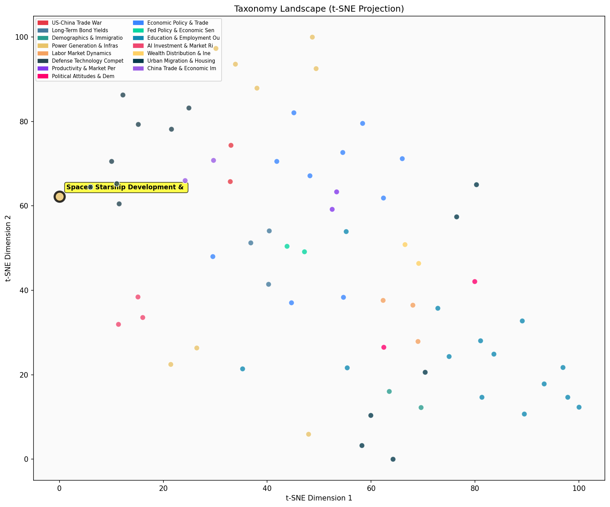

Description
This subcluster focuses on commercial space industry developments, particularly SpaceX's Starship testing program and broader private sector space ventures. Articles track rocket launch outcomes, financial performance metrics, satellite deployment statistics, and competitive dynamics between firms like SpaceX, Blue Origin, and Firefly Aerospace. Coverage emphasizes technical milestones, valuation changes, and market positioning within the emerging space economy. Unlike sibling subclusters examining terrestrial energy infrastructure or scientific research, this group specifically analyzes space commercialization as an economic sector, treating rocket development and satellite services as business ventures rather than purely technological achievements.
Similarity to All 70 Subclusters
Each cell represents a subcluster. Color intensity shows similarity (blue=low, red=high). Black line marks current subcluster position.

Relationship to Primary Clusters
Average similarity to each of the 15 primary clusters. Larger area = stronger relationship to that cluster.
Taxonomy Landscape
All 70 subclusters positioned by similarity (t-SNE). Current subcluster highlighted with label. Click to enlarge.
Network Connections
Current subcluster at center, connected to related subclusters. Line thickness = similarity strength.
Most Representative Articles
-
1. The 6th launch of @SpaceX Starship was largely successful, including the first reignition of one of
-
2. SpaceX's Starship failed mid-flight. SpaceX's reusable launch system also failed. The test foiled ef
-
3. In a major step towards making its Starship rocket system fully reusable, SpaceX successfully flew a
-
4. SpaceX’s Starship rocket, the most powerful ever launched, managed to take off but failed to reach o
-
5. The 8th Starship rocket exploded; like the prior test. The booster was successfully recaptured for t
Edge Cases (Boundary Articles)
-
1. India became the first nation to land a probe near the Moon's South Pole, which contains water ice tThis article is borderline because while it discusses space exploration, it focuses on a government space program (India's lunar mission) rather than commercial space ventures like SpaceX's Starship development that the cluster is specifically about. The content is more aligned with national space achievements and lunar exploration rather than private sector space industry developments and commercial rocket testing.
-
2. New @NBERpubs paper finds that there is no empirical evidence that government spending related to thThis article is borderline because while it discusses space-related spending, it focuses on historical economic analysis of government space programs rather than current commercial space developments or SpaceX's activities. The content is more aligned with economic research on productivity and innovation dynamics than with operational updates about private space ventures and rocket testing programs.
-
3. In 2024, commercial filings for lunar telecommunications spectrum outpaced those from governments foThis article is borderline because while it discusses commercial space activity (which fits the cluster's focus on private sector space ventures), it specifically concerns telecommunications spectrum filings rather than rocket development, launch testing, or the physical space hardware that typically defines this cluster. The content is more about regulatory/administrative aspects of space commerce rather than the engineering and operational developments that characterize SpaceX Starship and broader commercial space ventures.
Original Dendrogram